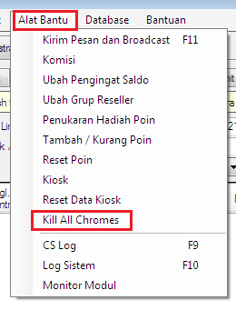

Kill All Chromes
Terkadang di tengah - tengah transaksi berjalan terjadi crash atau problem di modul yang menggunakan chrome seperti modul Mandiri Online, Mandiri Bisnis dan WA Center yang mengakibatkan modul tidak bekerja sebagaimana mestinya. Dimana agar normal kembali perlu dilakukan restart komputer server. Tentu hal ini akan mengganggu transaksi - transaksi Reseller yang sedang berlangsung.
Guna mengakomodir hal tersebut, mulai di v4.0.1 tersedia fitur Kill All Chromes yang berguna menghentikan beberapa terkait chrome tanpa perlu merestart komputer server. Harap diperhatikan, hanya gunakan fitur ini pada saat modul - modul diatas mengalami problem; apabila normal, menggunakan fitur ini justru akan membuat modul tersebut tidak bekerja. Letaknya berada di menu Alat Bantu -> Kill All Chromes. Jika masa berlaku OtomaX Anda akan habis klik disini dahulu.

Untuk menggunakannya, masuk menu Alat Bantu dan kemudian klik Kill All Chromes dan tara... semua yang terkait chrome akan dihentikan. Setelah itu NonAktifkan dan Aktifkan kembali modul yang bermasalah. Semoga beruntung dan modul normal kembali kinerjanya.